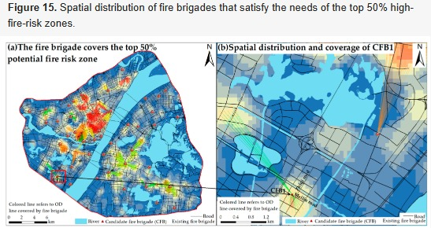

2 февраля 2023
Ежедневный отчет
Обстановка
2 февраля 2023, четверг.
Обход начальника академии
Утром ждали визита руководства академии. Поддерживали порядок в кабинете и прочие связанные с этим действия.
Работа над обзором объектной области в рамках НИР Дислокация 2023
Большую часть времени посвятил изучению материалов на иностранном языке посвященных решению задачи поиска оптимального размещения пожарных подразделений за рубежом. К искреннему удивлению обнаружил, что очень много работ посвящено данной теме в Китае, Турции и неожиданно Иране. При это в данных работах встречаются довольно неожиданные находки. Так, например, в публикациях из Ирана предложен способ поиска оптимальных мест дислокации основанный на генетическом алгоритме и алгоритме имитации отжига.
В работах китайских коллег рассмтаривается в большей степени решение многокритериальных задач с использованием соотвествующих методов.

Работы были внимательно изучены, резюме включено в обзор объектной области работы по НИР.
Также приступил к работе над публикациями из США. Интересная публикация попалась говорящая о использваонии именно визуализаций в поиске оптимальных мест дислокации.